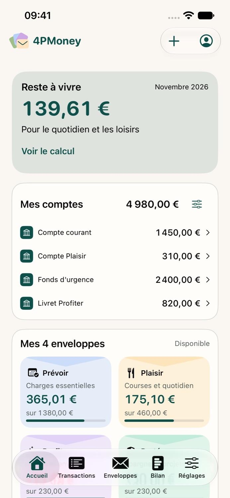
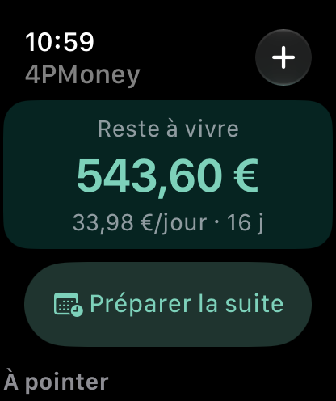
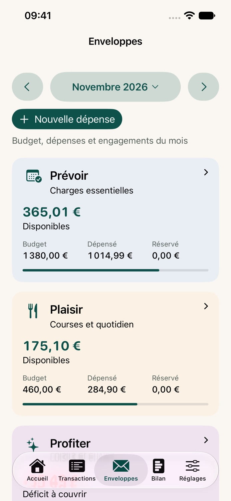
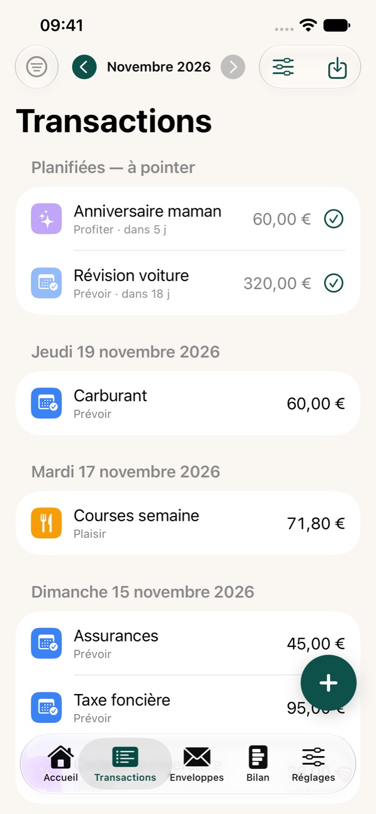
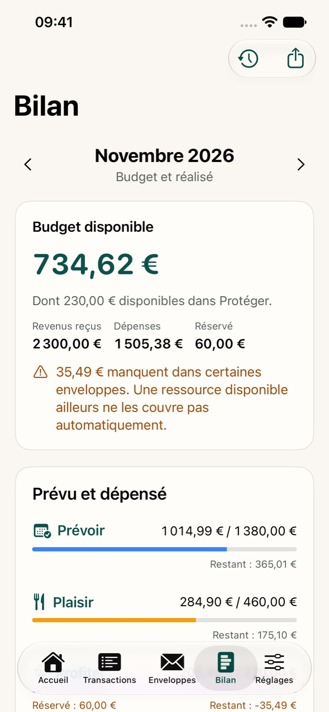
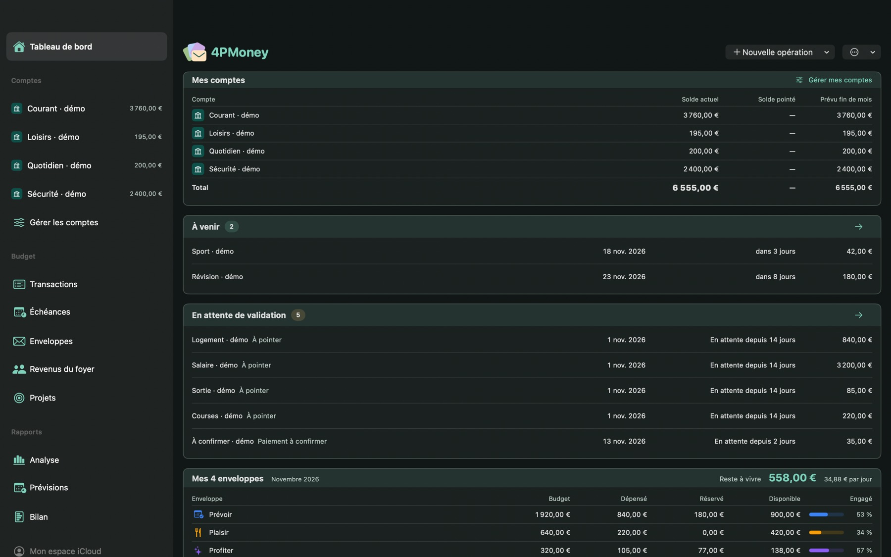
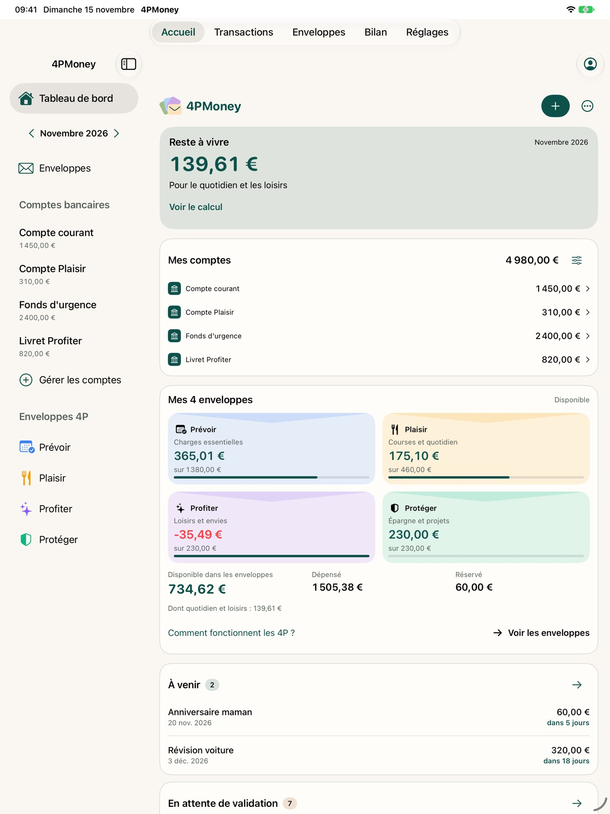

Prévoir
60 %
Les charges fixes et essentielles : logement, énergie, assurances, abonnements, carburant, impôts, scolarité.
Budget du foyer · méthode 4P
4PMoney répartit vos revenus dans quatre enveloppes — Prévoir, Plaisir, Profiter, Protéger — et vous dit, chaque jour, ce qu’il vous reste vraiment à vivre.


La méthode 4P
On part du revenu total du foyer, un ou plusieurs salaires confondus, et on le partage entre quatre enveloppes. La répartition de départ est 60 / 20 / 10 / 10. Vous pouvez l’ajuster, tant que le total fait 100 %.
60 %
Les charges fixes et essentielles : logement, énergie, assurances, abonnements, carburant, impôts, scolarité.
20 %
L’alimentation du quotidien, sans stress.
10 %
Loisirs et habillement : profiter sans culpabilité.
10 %
L’épargne de sécurité : fonds d’urgence d’abord, projets ensuite, long terme enfin.
Rien n’est envoyé : le calcul se fait dans cette page.
Montez les charges au-delà de 60 % du revenu pour voir comment la méthode réagit.
Les charges essentielles passent en premier, même au-delà de 60 %. Le reste se partage alors entre les trois autres enveloppes selon leur poids : la moitié pour Plaisir, un quart pour Profiter, un quart pour Protéger. L’application propose, vous validez.
Le surplus renforce Protéger. Il n’augmente pas automatiquement les loisirs : c’est vous qui décidez de le déplacer.
Reconstituer Protéger devient la priorité du mois suivant. La méthode ne vous juge pas, elle vous remet d’aplomb.
Les enveloppes sont une répartition de votre budget, pas des comptes bancaires. Vous pouvez tout gérer avec un seul compte ou en avoir plusieurs : répartir un budget ne déplace jamais d’argent.
Comment ça marche
Indiquez vos revenus et vos échéances. 4PMoney remplit les quatre enveloppes et réserve les dépenses déjà prévues, pour que le disponible affiché soit le vrai.

Une dépense se saisit en quelques secondes, depuis l’iPhone, la montre ou le Mac. Vous pouvez aussi importer un relevé de votre banque, que vous aurez téléchargé vous-même.

À tout moment, le bilan compare ce que vous aviez prévu à ce que vous avez dépensé. Si une enveloppe manque d’argent, l’application le dit clairement, sans compenser en silence.

Sur tous vos appareils
Votre budget se synchronise par votre iCloud privé. Chaque édition est pensée pour son écran.
Un tableau de bord dense, des tableaux triables et une saisie entièrement au clavier, pour ceux qui tiennent leurs comptes à la souris d’une main et au pavé numérique de l’autre.

La barre latérale garde vos comptes et vos enveloppes sous les yeux pendant que vous travaillez.

Le reste à vivre d’un coup d’œil, une dépense notée au poignet, des widgets pour l’écran d’accueil et des complications pour le cadran.
Vos données
Une application d’argent doit d’abord être digne de confiance. Voici exactement ce que fait 4PMoney, et ce qu’elle ne fait pas.
4PMoney ne vous demande jamais vos identifiants bancaires et ne se connecte à aucune banque. Vous saisissez vos opérations ou importez un relevé que vous avez vous-même téléchargé.
Votre budget reste sur vos appareils et, si vous utilisez iCloud, dans votre espace iCloud privé. Nous n’avons pas de serveur qui contient vos opérations.
Des statistiques d’usage et des diagnostics anonymes ne sont envoyés que si vous l’acceptez. Ils ne contiennent ni montant, ni libellé, ni nom de compte, et un seul interrupteur les arrête.
Export CSV de vos opérations et sauvegarde complète de votre budget, à tout moment, y compris sans abonnement.
4PMoney est un outil de suivi de budget. Ce n’est ni une banque ni un service de paiement, et l’application ne fournit pas de conseil financier. Le détail figure dans la politique de confidentialité.
Offres
Le téléchargement est gratuit. Le prix de l’abonnement, mensuel ou annuel, dépend de votre pays : il est affiché dans l’application et sur l’App Store avant tout achat.
Votre budget reste consultable.
Tout 4PMoney, au mois ou à l’année.
L’abonnement se prend par édition : iPhone avec Apple Watch, iPad, ou Mac. Selon votre pays, l’App Store peut proposer une période d’essai. Le paiement et la résiliation passent par votre compte Apple.
Télécharger
iOS 18 ou plus récent. L’app de la montre s’installe avec celle de l’iPhone.
Voir sur l’App StoreQuestions fréquentes
Non. L’application ne demande aucun identifiant bancaire. Vous saisissez vos opérations à la main ou vous importez un relevé CSV, QIF ou OFX que vous avez téléchargé depuis l’espace client de votre banque. L’import est traité sur votre appareil.
Non. Les quatre enveloppes sont une répartition de votre budget et peuvent partager un seul compte. Vous pouvez aussi suivre plusieurs comptes ; chaque opération indique le compte qui paie et l’enveloppe concernée.
Oui. C’est le point de départ de la méthode. Vous réglez les quatre pourcentages comme vous voulez, pourvu que leur total fasse 100 %.
Les charges essentielles restent prioritaires. 4PMoney calcule ce qu’il reste et propose de le partager entre Plaisir, Profiter et Protéger. Rien n’est appliqué sans votre validation.
Vous pouvez déclarer les membres du foyer, additionner plusieurs revenus et partager une dépense entre vous. Le budget se synchronise entre les appareils reliés au même compte iCloud ; il n’y a pas, aujourd’hui, de partage entre deux comptes iCloud différents.
Les montants sont en euros. L’application est disponible en français, anglais, allemand, espagnol, italien et portugais, avec les variantes du Canada et du Brésil.
Elles restent sur vos appareils. Vous pouvez toujours les consulter, les exporter et récupérer une sauvegarde. Seules la saisie et la modification sont suspendues.
Dans les réglages de votre compte Apple, rubrique Abonnements. L’accès reste ouvert jusqu’à la fin de la période déjà payée.
Une question, un souci, une idée ? Écrivez-nous, une personne vous répond.